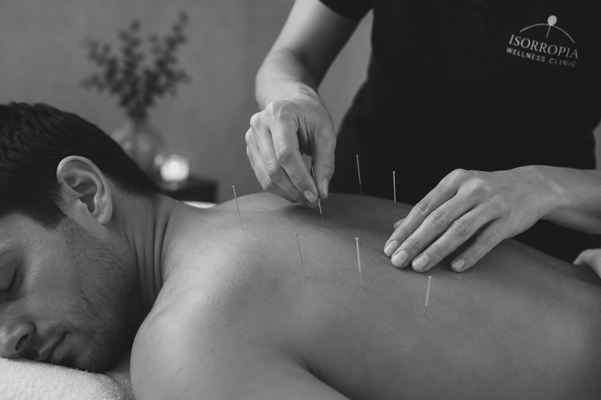

Acupuncture.
Balance the body. Support healing. Reduce stress. Now available at Isorropia.

Ancient practice,
modern evidence.
Acupuncture is a regulated health profession focused on promoting, maintaining, and restoring physical health by influencing the body's musculoskeletal and physiological systems. Practitioners use precise point stimulation — with or without needles — to reduce pain, improve movement, support tissue healing, and enhance overall wellness.
Aligned with CCHPBC, acupuncture aims to:
- —Restore physical function by improving circulation, reducing muscular tension, and supporting joint mobility.
- —Relieve pain associated with soft-tissue dysfunction, nerve irritation, and chronic conditions.
- —Support natural healing through targeted stimulation of neurological and physiological pathways.
How Your Acupuncturist Helps You Reach Your Goals
Acupuncture helps you reach your health goals by improving how your body moves, feels, and recovers. Through evidence-informed point selection and therapeutic techniques — including non-needle options — practitioners help you:
Restore balance and movement
Enhancing mobility, reducing muscular tension, and supporting healthy joint function.
Reduce pain
Relieving discomfort related to injury, chronic pain, inflammation, or nerve irritation.
Improve function
Supporting circulation, nervous system regulation, and tissue healing for better everyday performance.
Promote physical health
Enhancing wellness through improved stress regulation, immune support, and digestive balance.
Maintain physical health
Helping you stay resilient, balanced, and well-regulated over time.
How Acupuncturists Deliver These Benefits
Treatments can be performed with needles or needle-free, depending on your comfort and goals.
Clinical assessment — Evaluating symptoms, movement patterns, and underlying imbalances.
Acupuncture needling — Stimulating specific points to influence circulation, nerve pathways, and soft-tissue function.
Needle-free acupuncture — Using acupressure, cupping, gua sha, or other non-needle techniques to achieve similar therapeutic effects.
Manual therapy techniques — Including cupping, gua sha, and gentle mobilization to reduce tension and improve tissue quality.
Electro-acupuncture — Using low-level electrical stimulation to enhance therapeutic effects.
Lifestyle and home-care guidance — Supporting long-term wellness through movement, stress management, and self-care strategies.
Your first visit,
step by step.
Health history
Your practitioner will ask about your current concerns, lifestyle, sleep, digestion, and more — building a full picture of your constitution.
Assessment
Using pulse and tongue assessment alongside your history, your practitioner will identify patterns and imbalances to guide the treatment plan.
Treatment
Fine, sterile needles are placed at specific points. Most patients find it deeply relaxing. You'll rest comfortably for 20–30 minutes while the treatment takes effect.
After care
Your practitioner will recommend a treatment schedule and any lifestyle or dietary adjustments to support the work between sessions.
The acupuncturists at
Isorropia.
Anthony Lau
Registered Acupuncturist
Graduated with Distinction from KPU; specialising in sports injuries, trigeminal neuralgia, post-shingles nerve pain, insomnia, and digestive disorders using cupping, moxibustion, gua sha, auricular therapy, and tuina.
Reserve with AnthonyReady to book?
Acupuncture is now available at Isorropia. Book online in minutes.